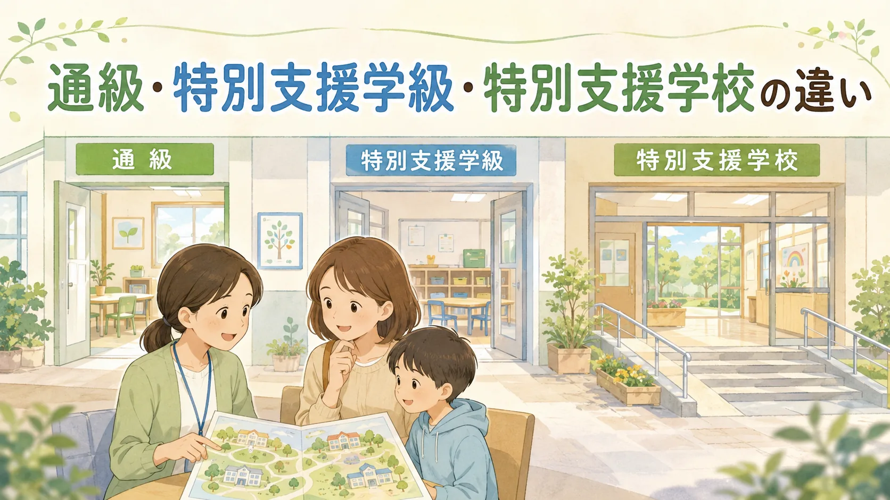

📖 知っておくと読みやすくなる言葉
- 通級指導教室（つうきゅうしどうきょうしつ）
- → 通常の学級に在籍しながら、週に数時間だけ別の教室でサポートを受ける仕組み
- 特別支援学級（とくべつしえんがっきゅう）
- → 障害のある子どもが少人数で学ぶクラス（8名以下）
- 就学相談（しゅうがくそうだん）
- → 小学校入学前に、子どもの就学先を教育委員会と一緒に決めるための相談
- 合理的配慮（ごうりてきはいりょ）
- → その子に合わせた特別なサポート
就学相談を控えた保護者から最もよく聞かれる質問のひとつが「通級と特別支援学級の違いって何ですか？」です。3つの制度の違いを知ると、選択肢が見えてきます。
就学相談シリーズ②もあわせてどうぞ：
通常学級も含めた4つの学びの場を、就学相談前の保護者向けに整理しています。「4つの学びの場とは？」を読む
通常学級も含めた4つの学びの場を、就学相談前の保護者向けに整理しています。「4つの学びの場とは？」を読む
3制度の比較表
| 制度 | 在籍場所 | 支援時間 | クラス規模 |
|---|---|---|---|
| 通級指導教室 | 通常学級（主） ＋通級教室（一部） | 週1〜8時間程度 | 個別指導中心 |
| 特別支援学級 | 特別支援学級（主） | 授業の多くを特別支援学級で受ける | 8名以下/クラス |
| 特別支援学校 | 特別支援学校 | 全授業を特別支援学校で受ける | 小中部6名以下 |
通級指導教室とは
通常の学級に在籍しながら、週に数時間だけ別の教室（通級指導教室）で個別指導を受ける仕組みです。言語・コミュニケーション・学習面など特定の困難に対して専門的な支援を受けられます。
- 対象：言語障害・自閉症・情緒障害・LD・ADHDなど
- LD・ADHDの場合は年間10〜280時間の範囲で利用可能（週1〜8時間が目安）
- 通常学級の友人関係を保ちながら支援が受けられる
特別支援学級とは
学校内に設置された少人数（8名以下）のクラスです。一人ひとりの学習ペースや特性に合わせたカリキュラムで学びます。給食・休み時間などを通常学級の子どもと過ごす「交流学習」も行われます。
特別支援学校とは
障害の程度が比較的重く、より専門的な支援が必要な子どもが通う学校です。小・中学部は1クラス6名以下（重複障害学級は3名以下）で、専門的な教員が支援します。看護師・作業療法士・理学療法士等が配置される場合もありますが、配置状況は学校や地域によって異なります。
選び方の考え方
文部科学省の方針：
障害のある子どもの就学先は、本人・保護者の意見を可能な限り尊重し、教育的ニーズと必要な支援について合意形成を行うことを原則に、市区町村教育委員会が総合的に判断します。画一的な振り分けではなく、子どもの状態や支援体制を見ながら考えることが大切です。
障害のある子どもの就学先は、本人・保護者の意見を可能な限り尊重し、教育的ニーズと必要な支援について合意形成を行うことを原則に、市区町村教育委員会が総合的に判断します。画一的な振り分けではなく、子どもの状態や支援体制を見ながら考えることが大切です。
選ぶ際に考えるポイントとして：
- 学習面：通常の学年のカリキュラムについていけるか
- 生活面：集団生活・給食・休み時間を過ごせるか
- コミュニケーション：同年代の子との関わりへの興味・関係構築力
- 本人の希望：子ども自身がどう感じているか
在籍変更はできますか？
できます。 通級→特別支援学級→特別支援学校、またはその逆も、手続きを経て変更可能です。子どもの成長や環境の変化に応じて柔軟に見直すことが大切です。年度替わりが一般的ですが、状況によっては年度途中の変更も可能です。
ご注意：この記事は一般的な情報提供を目的としており、医学的な診断や治療・支援の代わりになるものではありません。お子さんの状況については、医師・公認心理師・特別支援教育の専門家にご相談ください。また、制度や支援の内容は地域によって異なる場合があります。
地域差について：
通級・特別支援学級・放課後等デイサービスなどの利用可能性・内容は、お住まいの市区町村によって異なります。まずは地域の窓口（障害福祉課・特別支援教育担当）に確認することをおすすめします。
通級・特別支援学級・放課後等デイサービスなどの利用可能性・内容は、お住まいの市区町村によって異なります。まずは地域の窓口（障害福祉課・特別支援教育担当）に確認することをおすすめします。
📌 この記事を使うヒント
就学相談の前に、この記事をプリントして担当者に持参すると話が進みやすくなります。学校の先生に渡して特性への理解を求める補足資料としても使えます。
まなびの森教育研究所では、就学先の検討や特別支援教育について個別相談を承っています。
「得意・苦手発見シート」で子どもの特性を整理してから相談に臨むのがおすすめです。